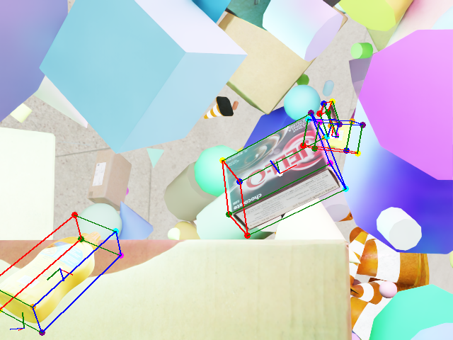

Isaac Sim: Generating Synthetic Data#
In this tutorial, you will generate synthetic data using Isaac Sim , NVIDIA’s robotics simulator. By the end of the tutorial, you will have a dataset of synthetic images of warehouse scenes, that can be used to train neural network models.
The complete workflow example is available here .
Prerequisites#
For this tutorial, make sure:
The compute cluster has a GPU that satisfies Isaac Sim’s system requirements (preferably an RTX 5080 or better)
You have an OSMO data credential
See also
You can check out the data credentials section for more information.
Building the Workflow#
This is the workflow file you will submit to generate synthetic data:
workflow:
name: isaac-sim-sdg
resources:
default:
cpu: 4
gpu: 1
memory: 32Gi
storage: 10Gi
tasks:
- name: isaac-sim-sdg
image: nvcr.io/nvidia/isaac-sim:5.1.0
command: ["bash"]
args: ["/tmp/entry.sh"]
environment: # (1)
ACCEPT_EULA: Y
NO_NUCLEUS: Y
files:
- contents: |
{
"launch_config": {
"headless": true
}
}
path: /tmp/config.json # (2)
- contents: |
set -e
/isaac-sim/python.sh /isaac-sim/standalone_examples/replicator/scene_based_sdg/scene_based_sdg.py \
--config /tmp/config.json
cp -r /isaac-sim/_out_scene_based_sdg/. {{output}} # (3)
path: /tmp/entry.sh
outputs:
- dataset:
name: isaac-sim-sdg-sample
Setting the required environment variables for Isaac Sim to run.
Config for Isaac Sim to run in headless mode. This is passed into the Isaac Sim command.
Isaac Sim writes the generated data to the /isaac-sim/_out_scene_based_sdg/ directory.
Running the Workflow#
The workflow typically takes 10 minutes to run on a NVIDIA RTX 5090 GPU.
Once the workflow has completed, you can download the dataset by running:
$ osmo dataset download isaac-sim-sdg-sample ~/
The folder structure will look like this:
isaac-sim-sdg-sample/
├── TopView/
├── PalletView/
├── DriverView/
└── metadata.txt
And in each of those sub-folders, you will find the following:
DriverView/
├── metadata.txt
├── bounding_box_2d_tight/
│ ├── bounding_box_2d_tight_0000.npy
│ └── ...
├── bounding_box_3d/
│ ├── bounding_box_3d_0000.npy
│ └── ...
├── distance_to_image_plane/
│ ├── distance_to_image_plane_0000.npy
│ └── ...
├── occlusion/
│ ├── occlusion_0000.npy
│ └── ...
├── rgb/
│ ├── rgb_0000.png
│ └── ...
└── semantic_segmentation/
├── semantic_segmentation_0000.png
└── ...
Here is some examples of warehouse images from different viewpoints in the dataset:


{kind=link}
{kind=link}
Exploring Different SDG Workflows#
Isaac Sim offers many standalone examples that you can use to generate different types of synthetic data. You can browse through all the available examples in the Isaac Sim documentation .
For example, instead of using the scene-based SDG workflow, you can use the object-based SDG workflow .
Modify the Isaac Sim command of the entrypoint script:
- contents: |
set -e
/isaac-sim/python.sh \ # (1)
/isaac-sim/standalone_examples/replicator/object_based_sdg/object_based_sdg.py \
--config /tmp/config.json
cp -r /isaac-sim/_out_obj_based_sdg_pose_writer/. {{output}} # (2)
path: /tmp/entry.sh
Notice that the script path is different. Now it is using the object-based SDG example, which lives at replicator/object_based_sdg/object_based_sdg.py.
The location where Isaac Sim is writing the data has changed, so the path for the source is updated.
You can update the name of the dataset to distinguish it from the scene-based SDG workflow, and submit the workflow again.
Once you download the dataset, you can see examples of objects with bounding boxes using domain randomization:
Original Image |
Bounding Box Overlay |

|
|

|
 |

|

|
{kind=link}
{kind=link}
Writing Your Custom SDG Workflow#
If you want to use your own Isaac Sim script, you can add your Isaac Sim SDG script to the workflow:
files:
- contents: |
...
path: /tmp/config.json
- path: /my_sdg_script.py
localpath: <path/to/your/script.py>
- contents: |
set -e
/isaac-sim/python.sh /my_sdg_script.py --config /tmp/config.json
path: /tmp/entry.sh